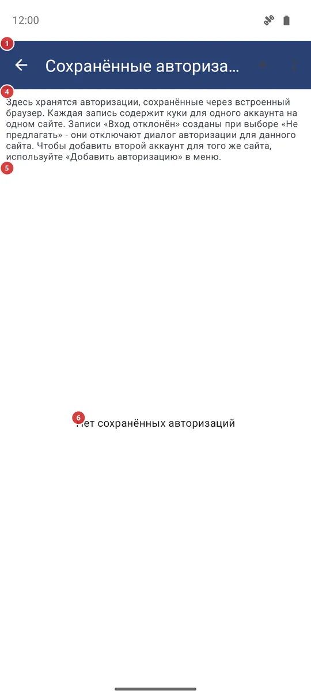
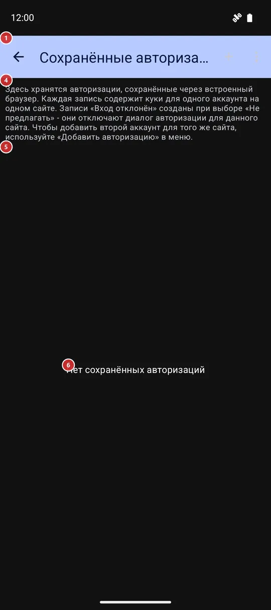

Сохранённые авторизации
Для чего этот экран
«Сохранённые авторизации» - список входов, которые встроенный браузер запоминает для сайтов, чтобы приложение могло брать содержимое с сайтов, требующих аккаунт, и не просило входить снова. Здесь их добавляют, переименовывают, обновляют и удаляют. Открывается из настроек, вкладка «Общие», раздел «Авторизация и аккаунты».


Порядок действий
- Нажмите «+ Добавить авторизацию» 2 и выберите сайт из списка или «Ввести адрес вручную» для другого.
- На открывшейся странице 12 войдите так же, как в обычном браузере, и нажмите «Сохранить авторизацию» 13.
- Дайте аккаунту понятное название 15 и нажмите «Сохранить».
- Аккаунт появится в списке под своим сайтом 5. Чтобы добавить второй аккаунт на тот же сайт, нажмите плюс в заголовке сайта 7.
- Когда сайт перестаёт принимать сохранённый вход, нажмите «Войти снова» 9. «Переименовать аккаунт» 10 меняет только название здесь.
- «Удалить сохранённую авторизацию» 11 убирает ненужный вход после подтверждения.
- Ничего на этом экране сохранять не нужно: каждое изменение применяется сразу, а «Назад» 1 просто закрывает экран.
Элементы
Список
1НазадЗакрывает список.
Всё на этом экране применяется в момент действия, поэтому при выходе ничего подтверждать не нужно.
2+ Добавить авторизациюНачинает новый вход на сайт.
Сначала предлагается список известных сайтов; последняя строка, «Ввести адрес вручную», просит полный веб-адрес, который начинается с http или https. После выбора сайта его страница входа открывается в окне входа, описанном в конце этой страницы. Адреса в доменах Google открываются в браузере с Custom Tabs; если такого браузера нет, окно «Нужен браузер» подскажет, что установить.
4ПояснениеКороткое напоминание о том, что такое сохранённая авторизация.
Каждая запись хранит куки одного аккаунта на одном сайте. Запись «Не авторизован (вы отказались)» создана, когда в окне входа вы выбрали «Не предлагать», и она не даёт окну появляться для этого сайта снова. Чтобы добавить второй аккаунт на тот же сайт, используйте «+ Добавить авторизацию» или плюс в заголовке сайта.
5Список входовВсе сохранённые входы, сгруппированные по сайтам.
У каждого сайта есть заголовок с названием: Instagram, Threads и Facebook узнаются по имени, у остальных сайтов показан адрес. Под заголовком идут аккаунты этого сайта. Пока вы не сохранили первый вход, список пуст.
6Нет сохранённых авторизацийСообщает, что пока ничего не сохранено.
Надпись заменяет список, пока записей нет. Нажмите «+ Добавить авторизацию» на панели, чтобы сохранить первую.
Сайты и аккаунты
7Добавить ещё один аккаунтДобавляет ещё один аккаунт на тот же сайт.
Плюс в заголовке сайта открывает страницу входа этого сайта. Нажмите его, если на одном сайте у вас два аккаунта и нужны оба.
8Запись об аккаунтеОдин сохранённый вход: название и подробности.
Под названием серая строка показывает, сколько куки хранится, когда запись сохранена и когда использовалась в последний раз либо «ещё не использовалась». Запись «Не авторизован (вы отказались)» не настоящий вход: она лишь помнит, что вы отказались входить на этот сайт, и приложение перестаёт предлагать. У неё только кнопка удаления; удалите её, чтобы вас спросили снова.
9Войти сноваВходит на тот же сайт заново и обновляет запись.
Пригодится, когда сайт больше не принимает сохранённый вход, например истёк срок или вы сменили пароль. Страница входа открывается без старых куки, так что сайт начинает с чистого листа. У отказных записей кнопки нет.
10Переименовать аккаунтМеняет название аккаунта в этом списке.
Откроется небольшое окно с текущим названием. Введите новое и нажмите «ОК»; пустое название игнорируется. Сам вход не затрагивается. У отказных записей кнопки нет.
11Удалить сохранённую авторизациюУдаляет сохранённый вход из приложения.
Окно спросит «Удалить вход для» с названием аккаунта и предложит «ОК» и «Отмена». После «ОК» куки этого аккаунта удаляются, а запись исчезает из списка.
- Отмена
- Сохранённый вход теряется и не восстанавливается; ваш аккаунт на сайте не затрагивается. Чтобы вернуть вход, войдите заново через «+ Добавить авторизацию» или плюс в заголовке сайта.
Окно входа
12Страница входаСобственная страница входа сайта, показанная внутри приложения.
Входите так, как просит сайт, включая код, который он присылает. Страница открывается без входа: старые куки сначала удаляются, чтобы прежний сеанс не мешал. В зависимости от настройки «Защищать секретные экраны» окно скрыто от снимков экрана и списка недавних приложений.
13Сохранить авторизациюСохраняет только что выполненный вход.
Кнопка остаётся неактивной, пока страница не установит хотя бы один куки, так что сначала войдите; если нажать слишком рано, приложение напомнит о входе. После нажатия появится окно с просьбой назвать аккаунт.
14ОтменаЗакрывает окно входа, ничего не сохраняя.
Нажмите, если открыли не тот сайт или передумали.
15Назовите аккаунтДаёт сохранённому входу понятное вам название.
В поле уже стоит название, которое приложению удалось прочитать из входа, или «Аккаунт по умолчанию», если прочитать ничего не вышло. Нажмите «Сохранить», чтобы запомнить запись; если тот же аккаунт этого сайта уже сохранён, приложение обновит его запись, а не добавит вторую. После этого куки и кэш в окне входа очищаются, а запись появляется в списке.